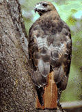

| Interesting Facts about Red-tailed Hawks |
In addition to interesting facts about Red-tailed Hawks, this page includes a description of the differences between the assumptions made in the population model applet and the real thing. At the end of the page you'll find references to other sites to learn more about Red-tailed Hawks.

Names and definitions -- The Hawk's scientific name is Buteo jamaicensis. The genus Buteo is from the Latin buteo (broad rounded wings). The specific name jamaicensis is named for Jamaica, the country, and from the Latin ensis (which means belonging to a place). This refers to the range of the hawk, extending from Alaska to the West Indies. The Hawk is a bird of prey and those types of birds are called raptors. The young ones, when they have their first complete plumage, are called immature.
Sizes -- Their length is 17 to 22 inches with an average of 19 inches. Their wingspread, depending on the species, ranges from 43 to 56 inches. Their weight ranges from 1.5 to 3.3 pounds, averaging 2.4 pounds.
Colors -- Adults are typically dark brown and the immature ones are gray brown. There are five different species of Hawks in the United states and several more around the world. Their colors vary slightly. They have a quite noticeable shade of red on their tail end. A few species are black, but it is rare.
Where do they live? Hawks are a very common type of bird that can be found in every habitat in North America except in the high arctic and in extensive tracts of dense forests. The ones that live in the far north migrate south in autumn (when the cool days begin). They can get down all the way to Mexico and South America. They don't stay in the snow and ice. They return in the spring, which is the breeding season. Hawks live in both open and wooded areas, particularly wood edges. They are often seen perched conspicuously on a treetop.
Reproduction -- Hawks start breeding when they are one year old. The breeding season is in the spring, and the eggs are laid six to eight weeks later. The mother keeps the eggs warm for about a month before they are born in the late spring. There are normally three eggs in a nestling. Weasels sometimes attack the nest, killing and/or eating the nestling.
Flight -- Active flight is with slow, steady, and deep wing beats. Hawks soar with wings raised slightly above horizontal. They hover and kite on moderate wind.
Eating -- While still young and living in the nest, hawks will eat worms and beetles. They will also eat frogs, mice and snakes. As they get older, hawks prey mainly on rodents but also on insects and their larvae, fish, and larger mammals such a rabbits, hares, and squirrels. They will also eat carrion.
If a hawk finishes a meal with their crop bulging, it may not hunt again for a day or two. The crop is a pouch halfway between the mouth and the stomach, where food is stored and gradually released to the stomach. The crop maintains the steady flow of food needed to sustain these big birds.
One assumption made in the program is that each hawk eats three squirrels per year, that is, it needs at least three to survive. This is a BIG assumption because hawks eat many other things and if they don't find food in an area they move until they find it. It is also interesting to know that hawks might attack and kill a squirrel but only eat small portions of it. The three squirrels per year assumption was added to have a strong relationship and dependency between the two species. In reality there is a relationship, but it is much more complex -- that involves many more species.
Vision -- Hawk's vision is much better than humans. They can see spiders and beetles from afar. Hawks can see a mouse from a height of one mile.
How old do they live? -- The hawk's average life span in the wild is 20 years.
In the program, hawks die of old age (when they reach 20 years) or from lack of food (that is, less than three squirrels per year).
Predators -- They have few, if any, natural predators, but they have enemies such as pollution, particularly from pesticides, and habitat destruction from developments. In short, humans are their main predators.
Causes of death -- In addition to their predators, young hawks can die from learning to fly or eating big snakes.
References --
- http://www.raptor.cvm.umn.edu/raptor/rfacts/redt.html - The Raptor Center is an international medical facility for birds of prey.
- http://www.ovcnet.uoguelph.ca/vth/wildbird/red-tail.htm - A nice page dedicated to the red-tailed hawk with great pictures, descriptions, and stories.
- http://inkido.indiana.edu/w310work/kehle/rthawk.htm - Another red-tailed hawk site.
- http://www.tulsawalk.com/birding/redtail.html - Another red-tailed hawk site.
- http://www.desertusa.com/aug96/du_hawk.html - Another red-tailed hawk page with very interesting information.
- http://www.ai-design.com/stargig/raptor/global/content/report/RedTailed.html - Yet another one.
- http://www.hawkcreek.org/bf-redtail.htm - This one has a great picture of a red-tailed hawk
- http://www.golden-eagle.org - This site contains very beautiful pictures of hawks and other raptor birds.
Last Updated:
Arcytech
Java Home
Page
Provide
Feedback